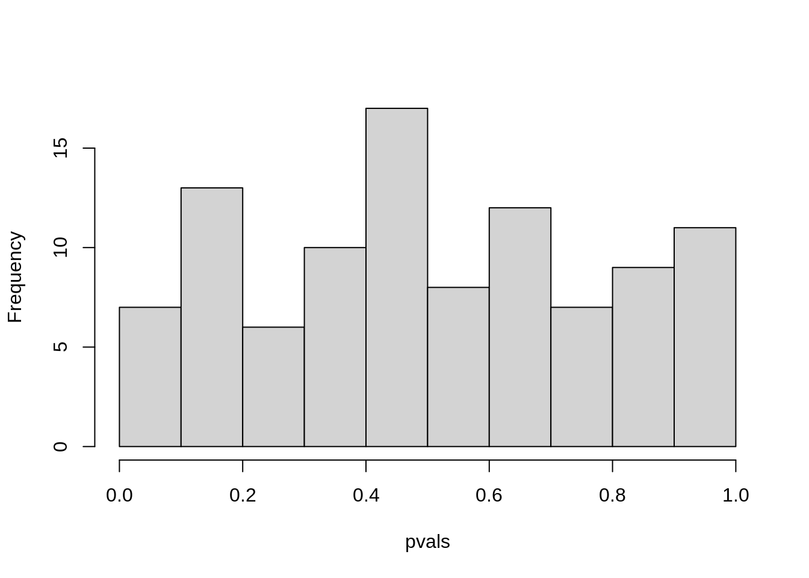

13 Multiple Testing
13.1 Conceptual
13.1.1 Question 1
Suppose we test \(m\) null hypotheses, all of which are true. We control the Type I error for each null hypothesis at level \(\alpha\). For each sub-problem, justify your answer.
- In total, how many Type I errors do we expect to make?
We expect \(m\alpha\).
Suppose that the m tests that we perform are independent. What is the family-wise error rate associated with these m tests?
Hint: If two events A and B are independent, then Pr(A ∩ B) = Pr(A) Pr(B).
The family-wise error rate (FWER) is defined as the probability of making at least one Type I error. We can think of this as 1 minus the probability of no type I errors, which is:
\(1 - (1 - \alpha)^m\)
Alternatively, for two tests this is: Pr(A ∪ B) = Pr(A) + Pr(B) - Pr(A ∩ B). For independent tests this is \(\alpha + \alpha - \alpha^2\)
Suppose that \(m = 2\), and that the p-values for the two tests are positively correlated, so that if one is small then the other will tend to be small as well, and if one is large then the other will tend to be large. How does the family-wise error rate associated with these \(m = 2\) tests qualitatively compare to the answer in (b) with \(m = 2\)?
Hint: First, suppose that the two p-values are perfectly correlated.
If they were perfectly correlated, we would effectively be performing a single test (thus FWER would be \(alpha\)). In the case when they are positively correlated therefore, we can expect the FWER to be less than in b.
Alternatively, as above, FWEW = Pr(A ∪ B) = Pr(A) + Pr(B) - Pr(A ∩ B). For perfectly positively correlated tests Pr(A ∩ B) = \(\alpha\), so the FWEW is \(\alpha\) which is smaller than b.
Suppose again that \(m = 2\), but that now the p-values for the two tests are negatively correlated, so that if one is large then the other will tend to be small. How does the family-wise error rate associated with these \(m = 2\) tests qualitatively compare to the answer in (b) with \(m = 2\)?
Hint: First, suppose that whenever one p-value is less than \(\alpha\), then the other will be greater than \(\alpha\). In other words, we can never reject both null hypotheses.
Taking the equation above, for two tests, FWEW = Pr(A ∪ B) = Pr(A) + Pr(B) - Pr(A ∩ B). In the case considered in the hint Pr(A ∩ B) = 0, so Pr(A ∪ B) = \(2\alpha\), which is larger than b.
13.1.2 Question 2
Suppose that we test \(m\) hypotheses, and control the Type I error for each hypothesis at level \(\alpha\). Assume that all \(m\) p-values are independent, and that all null hypotheses are true.
- Let the random variable \(A_j\) equal 1 if the \(j\)th null hypothesis is rejected, and 0 otherwise. What is the distribution of \(A_j\)?
\(A_j\) follows a Bernoulli distribution: \(A_j \sim \text{Bernoulli}(p)\)
- What is the distribution of \(\sum_{j=1}^m A_j\)?
Follows a binomial distribution \(\sum_{j=1}^m A_j \sim Bi(m, \alpha)\).
- What is the standard deviation of the number of Type I errors that we will make?
The variance of a Binomial is \(npq\), so for this situation the standard deviation would be \(\sqrt{m \alpha (1-\alpha)}\).
13.1.3 Question 3
Suppose we test \(m\) null hypotheses, and control the Type I error for the \(j\)th null hypothesis at level \(\alpha_j\), for \(j=1,...,m\). Argue that the family-wise error rate is no greater than \(\sum_{j=1}^m \alpha_j\).
\(p(A \cup B) = p(A) + p(B)\) if \(A\) and \(B\) are independent or \(p(A) + p(B) - p(A \cap B)\) when they are not. Since \(p(A \cap B)\) must be positive, \(p(A \cup B) < p(A) + p(B)\) (whether independent or not).
Therefore, the probability of a type I error in any of \(m\) hypotheses can be no larger than the sum of the probabilities for each individual hypothesis (which is \(\alpha_j\) for the \(j\)th).
13.1.4 Question 4
Suppose we test \(m = 10\) hypotheses, and obtain the p-values shown in Table 13.4.
pvals <- c(0.0011, 0.031, 0.017, 0.32, 0.11, 0.90, 0.07, 0.006, 0.004, 0.0009)
names(pvals) <- paste0("H", sprintf("%02d", 1:10))
- Suppose that we wish to control the Type I error for each null hypothesis at level \(\alpha = 0.05\). Which null hypotheses will we reject?
names(which(pvals < 0.05))## [1] "H01" "H02" "H03" "H08" "H09" "H10"We reject all NULL hypotheses where \(p < 0.05\).
- Now suppose that we wish to control the FWER at level \(\alpha = 0.05\). Which null hypotheses will we reject? Justify your answer.
names(which(pvals < 0.05 / 10))## [1] "H01" "H09" "H10"We reject all NULL hypotheses where \(p < 0.005\).
- Now suppose that we wish to control the FDR at level \(q = 0.05\). Which null hypotheses will we reject? Justify your answer.
names(which(p.adjust(pvals, "fdr") < 0.05))## [1] "H01" "H03" "H08" "H09" "H10"We reject all NULL hypotheses where \(q < 0.05\).
- Now suppose that we wish to control the FDR at level \(q = 0.2\). Which null hypotheses will we reject? Justify your answer.
names(which(p.adjust(pvals, "fdr") < 0.2))## [1] "H01" "H02" "H03" "H05" "H07" "H08" "H09" "H10"We reject all NULL hypotheses where \(q < 0.2\).
- Of the null hypotheses rejected at FDR level \(q = 0.2\), approximately how many are false positives? Justify your answer.
We expect 20% (in this case 2 out of the 8) rejections to be false (false positives).
13.1.5 Question 5
For this problem, you will make up p-values that lead to a certain number of rejections using the Bonferroni and Holm procedures.
- Give an example of five p-values (i.e. five numbers between 0 and 1 which, for the purpose of this problem, we will interpret as p-values) for which both Bonferroni’s method and Holm’s method reject exactly one null hypothesis when controlling the FWER at level 0.1.
In this case, for Bonferroni, we need one p-value to be less than \(0.1 / 5 = 0.02\). and the others to be above. For Holm’s method, we need the most significant p-value to be below \(0.1/(5 + 1 - 1) = 0.02\) also.
An example would be: 1, 1, 1, 1, 0.001.
pvals <- c(1, 1, 1, 1, 0.001)
sum(p.adjust(pvals, method = "bonferroni") < 0.1)## [1] 1sum(p.adjust(pvals, method = "holm") < 0.1)## [1] 1
- Now give an example of five p-values for which Bonferroni rejects one null hypothesis and Holm rejects more than one null hypothesis at level 0.1.
An example would be: 1, 1, 1, 0.02, 0.001. For Holm’s method we reject two because \(0.02 < 0.1/(5 + 1 - 2)\).
pvals <- c(1, 1, 1, 0.02, 0.001)
sum(p.adjust(pvals, method = "bonferroni") < 0.1)## [1] 1sum(p.adjust(pvals, method = "holm") < 0.1)## [1] 213.1.6 Question 6
For each of the three panels in Figure 13.3, answer the following questions:
- There are always: 8 positives (red) and 2 negatives (black).
- False / true positives are black / red points below the line respectively.
- False / true negatives are red / black points above the line respectively.
- Type I / II errors are the same as false positives and false negatives respectively.
- How many false positives, false negatives, true positives, true negatives, Type I errors, and Type II errors result from applying the Bonferroni procedure to control the FWER at level \(\alpha = 0.05\)?
| Panel | FP | FN | TP | TN | Type I | Type II |
|---|---|---|---|---|---|---|
| 1 | 0 | 1 | 7 | 2 | 0 | 1 |
| 2 | 0 | 1 | 7 | 2 | 0 | 1 |
| 3 | 0 | 5 | 3 | 2 | 0 | 5 |
- How many false positives, false negatives, true positives, true negatives, Type I errors, and Type II errors result from applying the Holm procedure to control the FWER at level \(\alpha = 0.05\)?
| Panel | FP | FN | TP | TN | Type I | Type II |
|---|---|---|---|---|---|---|
| 1 | 0 | 1 | 7 | 2 | 0 | 1 |
| 2 | 0 | 0 | 8 | 2 | 0 | 0 |
| 3 | 0 | 0 | 8 | 2 | 0 | 0 |
- What is the false discovery rate associated with using the Bonferroni procedure to control the FWER at level \(\alpha = 0.05\)?
False discovery rate is the expected ratio of false positives to total positives. There are never any false positives (black points below the line). There are always the same number of total positives (8).
For panels 1, 2, 3 this would be 0/8, 0/8 and 0/8 respectively.
- What is the false discovery rate associated with using the Holm procedure to control the FWER at level \(\alpha = 0.05\)?
For panels 1, 2, 3 this would be 0/8, 0/8 and 0/8 respectively.
- How would the answers to (a) and (c) change if we instead used the Bonferroni procedure to control the FWER at level \(\alpha = 0.001\)?
This would equate to a more stringent threshold. We would not call any more false positives, so the results would not change.
13.2 Applied
13.2.1 Question 7
This problem makes use of the
Carseatsdataset in theISLR2package.
- For each quantitative variable in the dataset besides
Sales, fit a linear model to predictSalesusing that quantitative variable. Report the p-values associated with the coefficients for the variables. That is, for each model of the form \(Y = \beta_0 + \beta_1X + \epsilon\), report the p-value associated with the coefficient \(\beta_1\). Here, \(Y\) representsSalesand \(X\) represents one of the other quantitative variables.
library(ISLR2)
nm <- c("CompPrice", "Income", "Advertising", "Population", "Price", "Age")
pvals <- sapply(nm, function(n) {
summary(lm(Carseats[["Sales"]] ~ Carseats[[n]]))$coef[2, 4]
})
- Suppose we control the Type I error at level \(\alpha = 0.05\) for the p-values obtained in (a). Which null hypotheses do we reject?
names(which(pvals < 0.05))## [1] "Income" "Advertising" "Price" "Age"
- Now suppose we control the FWER at level 0.05 for the p-values. Which null hypotheses do we reject?
names(which(pvals < 0.05 / length(nm)))## [1] "Income" "Advertising" "Price" "Age"
- Finally, suppose we control the FDR at level 0.2 for the p-values. Which null hypotheses do we reject?
names(which(p.adjust(pvals, "fdr") < 0.2))## [1] "Income" "Advertising" "Price" "Age"13.2.2 Question 8
In this problem, we will simulate data from \(m = 100\) fund managers.
set.seed(1) n <- 20 m <- 100 X <- matrix(rnorm(n * m), ncol = m)
set.seed(1)
n <- 20
m <- 100
X <- matrix(rnorm(n * m), ncol = m)These data represent each fund manager’s percentage returns for each of \(n = 20\) months. We wish to test the null hypothesis that each fund manager’s percentage returns have population mean equal to zero. Notice that we simulated the data in such a way that each fund manager’s percentage returns do have population mean zero; in other words, all \(m\) null hypotheses are true.
- Conduct a one-sample \(t\)-test for each fund manager, and plot a histogram of the \(p\)-values obtained.
pvals <- apply(X, 2, function(p) t.test(p)$p.value)
hist(pvals, main = NULL)
- If we control Type I error for each null hypothesis at level \(\alpha = 0.05\), then how many null hypotheses do we reject?
sum(pvals < 0.05)## [1] 4
- If we control the FWER at level 0.05, then how many null hypotheses do we reject?
sum(pvals < 0.05 / length(pvals))## [1] 0
- If we control the FDR at level 0.05, then how many null hypotheses do we reject?
sum(p.adjust(pvals, "fdr") < 0.05)## [1] 0
- Now suppose we “cherry-pick” the 10 fund managers who perform the best in our data. If we control the FWER for just these 10 fund managers at level 0.05, then how many null hypotheses do we reject? If we control the FDR for just these 10 fund managers at level 0.05, then how many null hypotheses do we reject?
best <- order(apply(X, 2, sum), decreasing = TRUE)[1:10]
sum(pvals[best] < 0.05 / 10)## [1] 1sum(p.adjust(pvals[best], "fdr") < 0.05)## [1] 1
- Explain why the analysis in (e) is misleading.
Hint The standard approaches for controlling the FWER and FDR assume that all tested null hypotheses are adjusted for multiplicity, and that no “cherry-picking” of the smallest p-values has occurred. What goes wrong if we cherry-pick?
This is misleading because we are not correctly accounting for all tests performed. Cherry picking the similar to repeating a test until by chance we find a significant result.